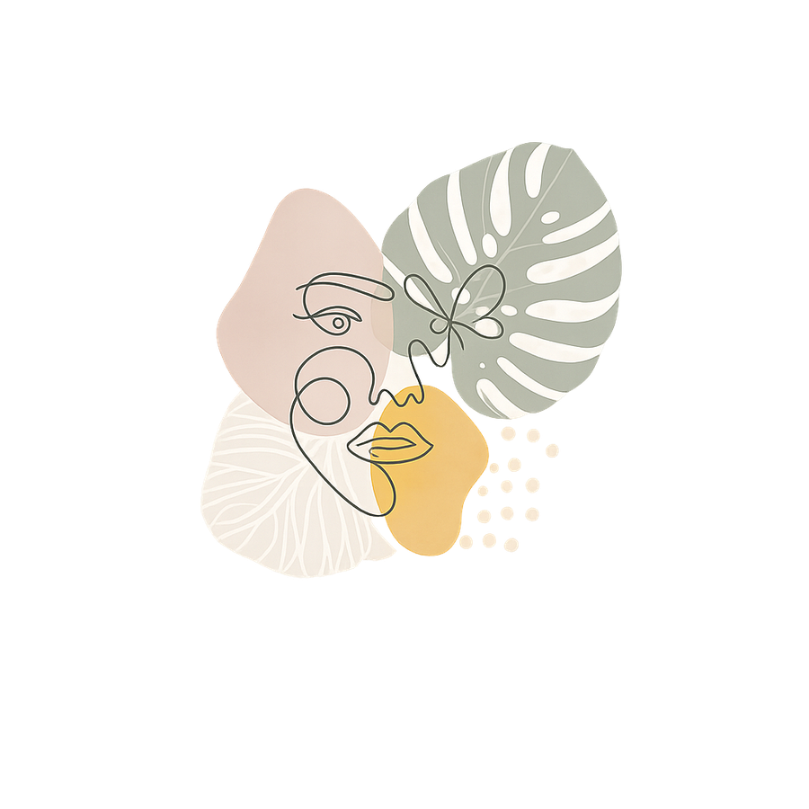

Behandlungsangebot
Klassische Homöopathie
Mehr als ein Mittel gegen Symptome — ein präzises Werkzeug für die tieferen Ursachen einer Erkrankung.

Homöopathie ist für viele Menschen eine letzte Option — wenn die Schulmedizin nicht weiterkommt, wenn Beschwerden chronisch geworden sind, wenn der Körper auf Behandlungen nicht mehr anspricht wie erhofft.
In meiner Praxis ist Homöopathie jedoch kein letzter Ausweg. Sie ist ein präzises diagnostisches und therapeutisches Werkzeug, das dort ansetzt, wo andere Methoden nicht hinreichen: an den tieferen Ursachen einer Erkrankung.
Jeder Mensch trägt eine Geschichte in sich. Körperliche Beschwerden sind häufig der sichtbare Ausdruck tieferer seelischer, psychologischer oder charakterlicher Muster. Wer diese Muster versteht, kann gezielter behandeln — und nachhaltiger heilen.
Mein Ansatz
Mehrere Heilsysteme zu einem Ganzen verbunden
Was meine Arbeit von einer klassischen homöopathischen Behandlung unterscheidet, ist die Verbindung mehrerer Heilsysteme. Neben dem homöopathischen Arzneimittel setze ich je nach individuellem Fall ergänzend Bachblüten und Schüßler-Salze ein — stets unter Einbeziehung des Enneagramms als diagnostische Lupe.
Das Enneagramm erlaubt es mir, den Menschen hinter der Erkrankung tiefer zu verstehen. Es zeigt, welche Grundmuster, Schutzstrategien und seelischen Wunden möglicherweise zur Entstehung einer Beschwerde beigetragen haben. Diese Tiefenschicht in die Behandlung einzubeziehen, macht den entscheidenden Unterschied.
- Klassische homöopathische Arzneimittel
- Ergänzend Bachblüten & Schüßler-Salze
- Das Enneagramm als diagnostische Lupe
Was Sie erwartet
Eine Behandlung, so einzigartig wie Sie
Am Anfang steht eine ausführliche Erstanamnese — ein tiefgehendes Gespräch von ein bis zwei Stunden, in dem ich nicht nur Ihre Symptome, sondern Sie als Menschen kennenlernen möchte. Daraus entsteht ein individuelles Behandlungskonzept, das so einzigartig ist wie Sie selbst.
Behandlungen finden in meiner Praxis in Billerbeck oder per Videotelefon statt.
Patientenstimme
Was Patienten berichten
»Lieber Herr Rathmer, es ist nun schon über ein halbes Jahr her, dass ich bei Ihnen war. Trotzdem wollte ich Ihnen gern berichten, was der Termin bei Ihnen für mich gebracht hat:
Ich war bei Ihnen wegen verschiedener Diagnosen von diversen Ärzten — u. a. Depressionen, Autoaggression und Schlafstörungen. Zum damaligen Zeitpunkt habe ich täglich relativ starke Antidepressiva am Morgen einnehmen müssen und Schlaf- und Beruhigungsmittel am Abend. Weiterhin habe ich seit ca. 2010 täglich L-Thyroxin eingenommen, da in Folge eines Nierenversagens eine Schilddrüsenunterfunktion diagnostiziert wurde — zuletzt in der Dosierung 150 mg.
Noch am gleichen Tag, nach dem Termin mit Ihnen, habe ich ausnahmslos alle Medikamente abgesetzt — auch das Schilddrüsenhormon. Nach einem unangenehmen Entzug von ca. einer Woche ging es mir schlagartig besser. Ich konnte schlafen, war nicht mehr so melancholisch eingestellt und hatte keine Probleme mehr mit Unruhe und Restless-Legs-Syndrom. Mein Gemütszustand wurde von Woche zu Woche besser. Ich hatte das Gefühl, wieder so mit Stress und Frust umgehen zu können wie früher — nämlich objektiv und angemessen.
Im März war ich dann wegen einer Erkältung bei meinem Hausarzt, dem ich erzählt habe, dass ich sämtliche Medikamente abgesetzt habe. Es wurde ein großes Blutbild gemacht — die Schilddrüsenwerte lagen im Normbereich. Beim nächsten Blutbild waren meine Blutwerte absolut in Ordnung. Der Schilddrüsenwert liegt nun im absoluten Soll und es würde keineswegs zur Einnahme von Hormonen geraten werden.
Ich möchte Ihnen auf diesem Wege ganz herzlich für Ihre Hilfe danken!«
— Miriam S., 39 Jahre
Weitere Stimmen
Was Patienten berichten
„Ich hatte jahrelang mit wiederkehrenden Migräneanfällen zu kämpfen, ohne dass die Schulmedizin eine befriedigende Lösung fand. Herr Rathmer hat sich sehr viel Zeit genommen, meine gesamte Krankengeschichte zu verstehen. Nach einigen Wochen mit dem homöopathischen Mittel, das er für mich ausgewählt hat, wurden die Anfälle deutlich seltener und schwächer. Ich bin sehr dankbar für diese Erfahrung."
— Sabine M., 48 Jahre
„Mein Sohn litt als Kleinkind unter ständigen Ohrenentzündungen. Nach jedem Antibiotikum kam die nächste Entzündung. Herr Rathmer hat ihn homöopathisch behandelt – seitdem ist er seit über einem Jahr beschwerdefrei. Ich hätte das vorher nicht für möglich gehalten."
— Kerstin B., Mutter eines 4-jährigen
„Nach einer langen Erschöpfungsphase, die mein Arzt nicht eindeutig einordnen konnte, wandte ich mich an die Naturheilpraxis Rathmer. Die Behandlung war ganzheitlich und individuell – nicht nach Schema F. Ich habe meine Energie schrittweise zurückgewonnen und fühle mich heute stabiler als seit Jahren."
— Thomas K., 52 Jahre
„Ich war skeptisch gegenüber der Homöopathie, bin aber auf Empfehlung einer Freundin trotzdem hingegangen. Was mich überzeugt hat, war die Gründlichkeit der Erstanamnese. Herr Rathmer fragt sehr genau nach – nicht nur nach Symptomen, sondern nach dem Menschen dahinter. Meine chronischen Schlafprobleme haben sich deutlich gebessert."
— Andrea L., 39 Jahre
„Ich leide seit Jahren unter Neurodermitis. Cremes und Kortison haben immer nur kurzfristig geholfen. Die homöopathische Behandlung bei Herrn Rathmer hat erstmals an der Wurzel angesetzt. Die Haut ist ruhiger geworden, und vor allem: Ich verstehe jetzt besser, welche Zusammenhänge eine Rolle spielen."
— Markus F., 44 Jahre
„Herr Rathmer hat mich durch eine schwierige hormonelle Umstellungsphase begleitet. Die Wechseljahresbeschwerden – Hitzewallungen, Schlaflosigkeit, innere Unruhe – waren für mich sehr belastend. Durch die homöopathische Behandlung haben sich die Beschwerden über einige Monate hinweg deutlich gemildert. Ich bin froh, diesen Weg gegangen zu sein."
— Elisabeth W., 54 Jahre
Einblick
Was ist Enneagramm-Homöopathie?
In diesem Video erkläre ich, was Enneagramm-Homöopathie ist und was sie von klassischen Behandlungsansätzen unterscheidet.
Haben Sie Fragen oder möchten Sie einen ersten Termin vereinbaren?
Das Kennenlerngespräch ist kostenlos und unverbindlich.